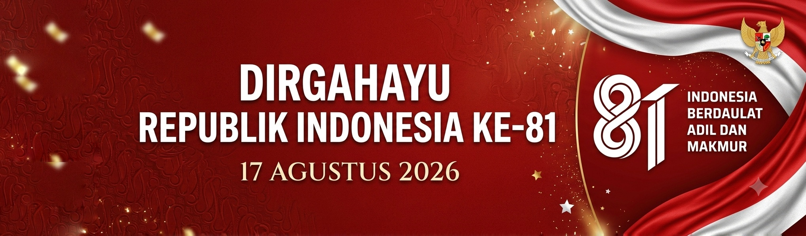
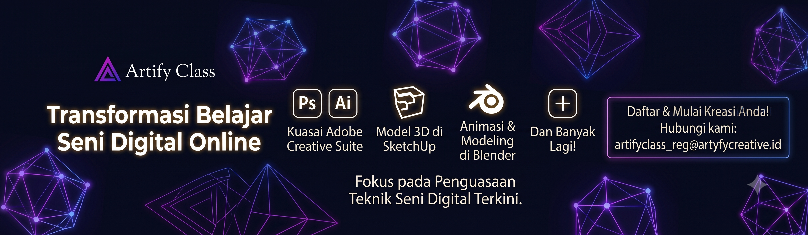

TAP
Sentuh layar untuk memulai
Menu ☰


🇮🇩
TRAIL
ARNX
Tabel
1. The Assembly
2. Behavioral Approach
3. Sebelum Esok
4. Dashboard
5. Survey Evaluasi (Dapatkan Voucher)
6. In Restroom
7. Interaksi (anonim)
Tutup
Judul Bab
Kembali ke Menu
Komentar Anonim
Membalas UserID
✖
Kirim
Terkirim!
Komentar Masuk (
)
Memuat pesan...
Kembali ke Menu
Komentar Anonim
Komentar Masuk ()
Memuat pesan...